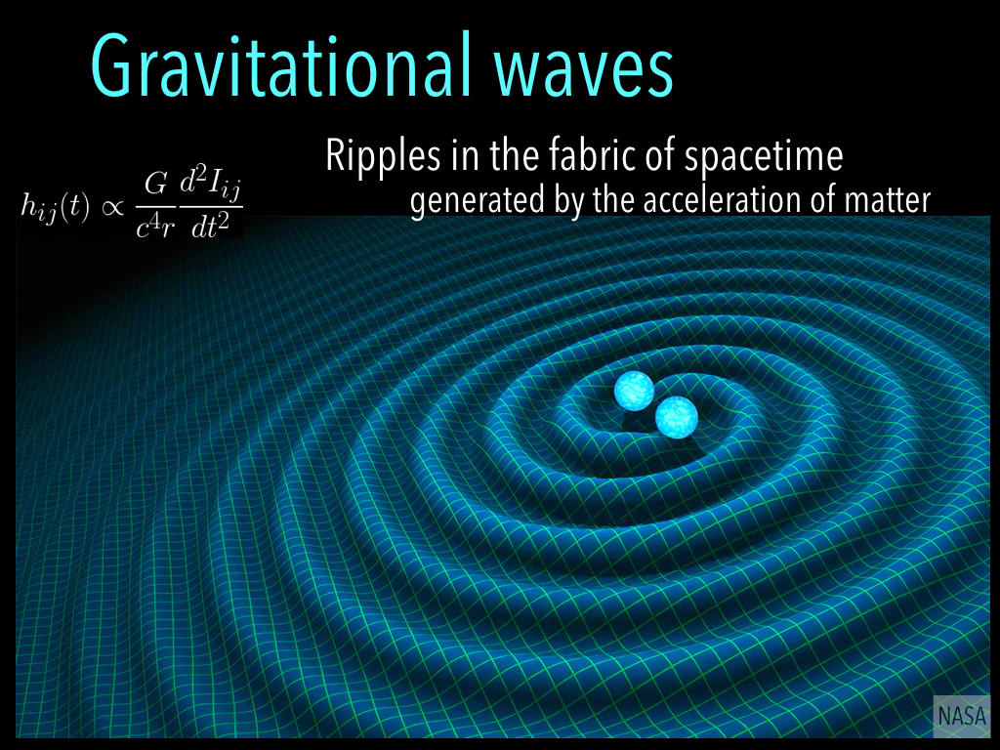

Gravitational waves are tiny ripples in the fabric of spacetime. These waves interact very weakly with matter, allowing the information imprinted in these signals to travel over billions of light years without distortion from dust or galaxies. This signal clarity offers unprecedented tests of fundamental physics through the laboratory of cosmic collisions and explosions.
Gravitational waves were first predicted by Einstein's general theory of relativity. General relativity tells us that what we feel as gravity is the curvature of spacetime; three-dimensional space and time woven into a four-dimensional mathematical description of our reality. General relativity describes the relationship between the distribution of mass and energy with the curvature of spacetime. Matter both follows the curvature of spacetime and induces spacetime curvature.
Gravitational waves stretch and squeeze spacetime as they pass. This spacetime strain is generated by the asymmetric acceleration of matter. Gravitational waves ripple outward from their source at the speed of light.
Below is an illustration of the effect of passing gravitational waves on spacetime strain. A gravitational wave passing through the series of hoops will stretch and squeeze them in perpendicular directions. A gravitational wave detector should be able to sense this perpendicular relative change in length.

ESA.